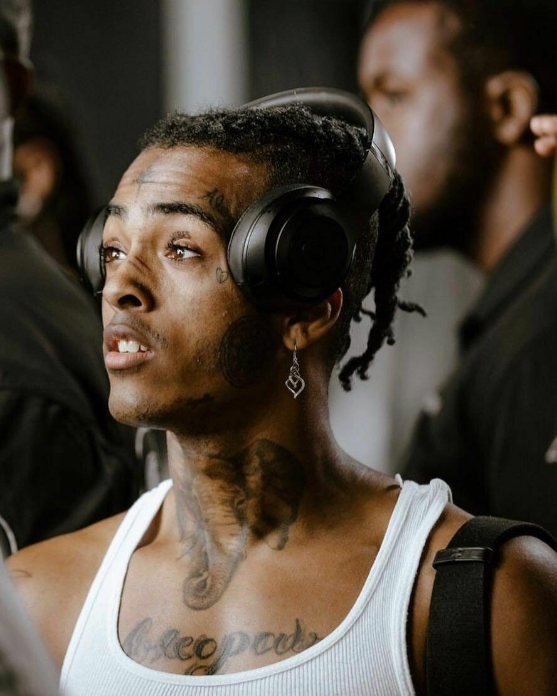

1998-2018
"Alguns matam, alguns roubam e alguns partem o seu coração."
Seu nome de batismo é Jahseh Dwayne Ricardo Onfroy. Seu pai esteve em um presídio durante grande parte de sua infância, deixando sua mãe, Cleopatra Bernard, como a maior responsável pela sua criação. Ex-integrante do grupo Members Only, tornou-se popular por canções como "Look at Me", "SAD!" e "Jocelyn Flores". Lançou os álbuns "17" e "?", respectivamente em 2017 e 2018. Seu álbum "17" figurou na segunda posição da parada americana.